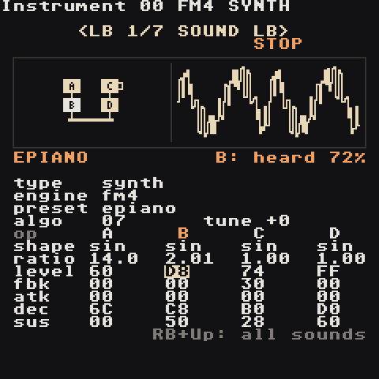
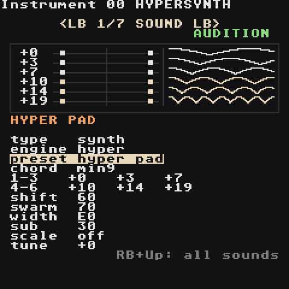
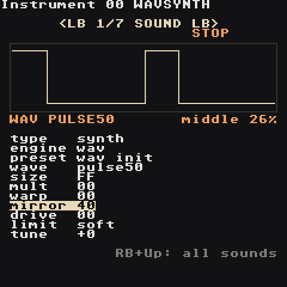
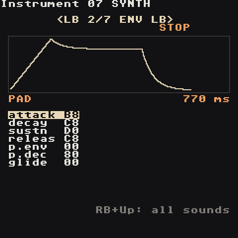
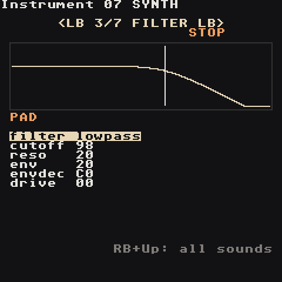
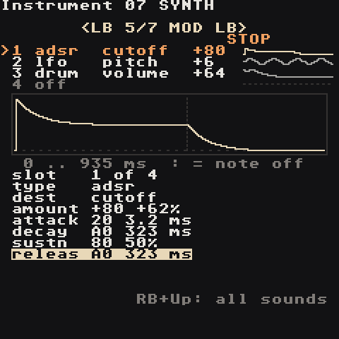
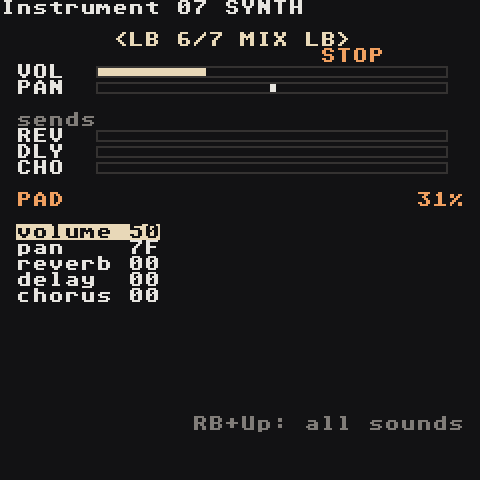
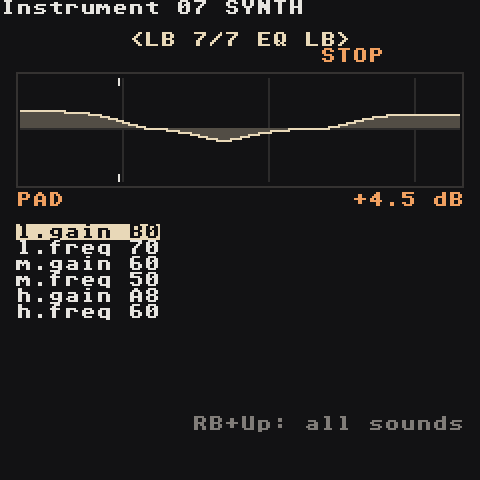

Synth
Every instrument slot 00–7F can be a synth or a sample. New projects fill 00–0F with a ready synth kit. Open an instrument with RB + Right from a phrase; the cursor lands on preset, so A + Left/Right immediately flips through sounds and A + Start plays one (Start plays the phrase, as everywhere).
Each track plays one synth voice at a time. A note stopped by KILL or replaced by a different instrument fades out with its release instead of cutting off.
Want vowels, plucked strings, bells, 808 drums or wavetables? Set type to macro: the Macro Synth plays 47 ready synthesis models with two knobs, and keeps this page's ENV, FILTER, MOD, MIX and EQ pages.
The starter kit
| Slot | Preset | Slot | Preset |
|---|---|---|---|
00 |
kick — sine with a fast pitch drop and drive | 08 |
pluck — bright saw that closes fast |
01 |
snare — triangle body + noise | 09 |
keys — FM electric piano with tremolo |
02 |
hat — six metallic squares + noise, highpassed | 0A |
bell — FM bell, long ring |
03 |
openhat — longer hat | 0B |
acid — resonant saw with glide |
04 |
clap — bandpassed noise | 0C |
subbass — clean sine sub |
05 |
bass — saw + sub, filter bite | 0D |
chip — 8-bit pulse |
06 |
lead — pulse with vibrato and glide | 0E |
tom — pitched drum |
07 |
pad — supersaw, slow attack, drifting filter | 0F |
perc — woodblock/rim |
init is a plain starting point for designing from scratch. Basses are tuned two octaves down, drums are tuned so C 3 sounds right.
Engines
The engine knob (SOUND page, under type) picks how the tone is made. The other five pages (ENV, FILTER, LFO, MOD, MIX) work the same for every engine, and so do the commands.
| Engine | Makes | Like the M8's |
|---|---|---|
synth |
the original synth: waves, sub, noise, 2-operator FM, chords | — |
fm4 |
four-operator FM: e-pianos, bells, brass, organs, slap bass | FM Synth |
hyper |
a six-note chord of detuned saw pairs, wide in stereo: pads, trance leads, hoovers | Hypersynth |
wav |
raw 8-bit shapes you bend: chip leads, PWM, sync and fold sounds | Wavsynth |
Changing the engine loads that engine's starting sound (fm init, hyper init, wav init); A + Left/Right on preset then browses only that engine's presets. B + Select undoes an engine change like any other edit.
| Engine | Presets |
|---|---|
fm4 |
epiano, fm bell, tubular, fm bass, slap bass, brass, organ, marimba, fm pluck, glass, fm lead, clav |
hyper |
hyper pad, trance lead, hoover, strings, stab, dream, hyper bass |
wav |
chip lead, chip bass, pwm pad, sync lead, fold bass, zap, lofi bell, noise hat |
The LFO's shape target, and a MOD slot aimed at shape, mean something per engine: fm4 — FM brightness (every modulator's depth), hyper — the swarm breathes, wav — the mirror moves (pulse-width modulation on pulse50). A MOD slot aimed at fm deepens every FM4 modulator (+127 = twice as deep); one aimed at noise mixes noise into any engine.
FM4 engine

Four sine operators A B C D. An operator either is heard (a carrier, it goes to the output) or bends another one (a modulator: the more level, the brighter and more metallic). algo picks who does what; the picture draws the routing: boxes on top modulate the boxes below them, the bottom ones feed the output bar. A filled box is sounding, the bright one is under the cursor, a hook on its side means feedback. Next to it: two cycles of the sound it makes.
| Knob | Does |
|---|---|
algo |
the routing, 00–0B (below) |
tune |
semitones, like the synth's |
shape |
the operator's wave: sin (pure FM), sw2 half sine, sw3 two humps, sw4 quarter sine, sw5/sw6 double-speed halves, tri, saw, squ, pul (25%), imp (a click), nse (noise) |
ratio |
pitch against the note: 1.00 = the note, 2.00 = an octave up, 0.50 down. Whole ratios sound warm; 3.50, 7.00, 1.41 ring like bells. A + Left/Right ±0.01, A + Up/Down the next whole ratio |
level |
a carrier: how loud; a modulator: how much it bends (FM depth) |
fbk |
feedback: the operator modulates itself — sine, then saw, then noise |
atk dec sus |
the operator's own envelope: time to reach its level, time to fall, level it holds (FF = full). A modulator that decays fast = the "ping" of an e-piano; one that attacks slowly = a brass swell |
The grid has one column per operator: Up/Down stay in the column, Left/Right move between operators. The amp envelope on the ENV page still shapes the whole note.
algo |
Routing | algo |
Routing | |
|---|---|---|---|---|
00 |
A>B>C>D | 06 |
[A>B>C]+[A>B>D] | |
01 |
[A+B]>C>D | 07 |
[A>B]+[C>D] — two pairs (e-piano) | |
02 |
[A>B+C]>D | 08 |
[A>B]+[A>C]+[A>D] | |
03 |
[A>B+A>C]>D | 09 |
[A>B]+[A>C]+D | |
04 |
[A+B+C]>D | 0A |
[A>B]+C+D | |
05 |
[A>B>C]+D | 0B |
A+B+C+D — additive: four tones, no FM (organ) |
> = modulates, + = both heard (or both modulate the same one).
Try: fm init, set C's ratio to 3.50 and raise C's level — a bell; shorten C's dec to 70 and it becomes a pluck.
HYPER engine

Six notes at once, each played by two saws tuned slightly apart, spread left and right, plus a square sub. The picture has a lane per note: on the left the stereo field (its two saws as dots, pushed apart by width), on the right one second of how the pair beats (flat = in tune, more bumps = faster shimmer). Dim lanes are faded out by shift.
| Knob | Does |
|---|---|
chord |
fills the six notes: unison, octaves, 5th, major, minor, sus2, sus4, maj7, min7, dom7, maj9, min9, add9, min11, quartal. Editing a note shows custom |
1-3 / 4-6 |
the six notes, semitones above the one you play (-24…+36) |
shift |
fades from notes 1-3 (00) to notes 4-6 (FF); in between you hear both |
swarm |
how far apart each note's two saws are tuned, up to 60 cents: thicker, then seasick |
width |
00 = mono, FF = one saw of each pair hard left, the other hard right |
sub |
square sub: 01–7F two octaves down (louder as it rises), 80–FF one octave down |
scale |
on: every note moves down onto the song's Key/Scale (Project screen), so any note you type gives an in-key chord |
tune |
semitones |
CHRD in a phrase replaces the six notes: its notes, then the same an octave up (CHRD 0047 = 0 4 7 12 16 19).
WAV engine

A deliberately raw, 8-bit oscillator (no smoothing: it aliases like a game console). Pick a shape, then bend it; the picture shows the result through the drive stage.
| Knob | Does |
|---|---|
wave |
pulse12, pulse25, pulse50, pulse75, saw, triangle, sine, tonenoise (a looping noise pattern with a pitch), noise (8-bit noise, colour follows the note) |
size |
steps per cycle: 00 = 4 (crunchy) … FF = 256 (smooth) |
mult |
repeats the shape in one cycle, x1…x16 — a hard-sync sound |
warp |
squeezes the shape into the start of the cycle, silence after — a hollow, vocal tone |
mirror |
moves the middle of the wave: on pulse50 it is the pulse width (80 = square), on the others it bends the shape |
drive |
the same drive as on the FILTER page |
limit |
what drive does when the wave gets too loud: soft saturation, clip, sin (smooth fold), fold, wrap. Applies to every engine |
tune |
semitones |
Try: pwm pad — the LFO moves mirror; fold bass — a sine with drive 60 and limit fold.
Pages and knobs
Switch pages with LB + Left/Right. Values are hex 00–FF unless noted. The top of the page draws the result; press RB + Select for a plain-English explanation of the focused knob.
SOUND — the raw tone

| Knob | Does |
|---|---|
type |
synth / sample |
engine |
how the tone is made: synth, fm4, hyper, wav (see Engines); the rows below are the synth engine's |
preset |
load a ready sound (overwrites the knobs) |
wave |
sine, triangle, saw, pulse, supersaw, noise, metal |
shape |
depends on the wave: sine → feedback (buzzier), triangle → wavefold, saw → octave brightness, pulse → width, supersaw → detune, noise → crunch, metal → spread |
sub |
square one octave below — fatter bass |
noise |
mixes white noise in — snares, breath |
fm |
FM depth: bells, keys, metallic tones |
ratio |
FM partner pitch: 1, 2 warm; 3.5, 7, 11 bell-like |
chord |
play a chord from every note: 5th, octave, major, minor, sus2, sus4, maj7, min7, dom7 |
tune |
semitones, -12 = an octave down |
ENV — volume and pitch over time

| Knob | Does |
|---|---|
attack |
fade-in time |
decay |
time to fall to the sustain level |
sustn |
level while the note holds; 00 = pluck or drum |
releas |
fade after the note stops |
p.env |
pitch drop at note start, up to +48 semitones — kicks, toms, zaps |
p.dec |
how fast that pitch drop happens |
glide |
slide between notes (mono-synth legato); 00 = off |
Times are exponential: 00 = 1 ms, 40 = 10 ms, 80 = 100 ms, C0 = 1 s, FF = 10 s.
FILTER — bright or dark

| Knob | Does |
|---|---|
filter |
lowpass, highpass, bandpass, off |
cutoff |
20 Hz – 20 kHz; lower = darker (lowpass) |
reso |
peak at the cutoff; high = squelch |
env |
brightness burst at each note (also drives FM brightness) |
envdec |
how fast the burst closes |
drive |
saturation before the filter — warmth, grit |
LFO — wobble
| Knob | Does |
|---|---|
lfo |
what wobbles: pitch (vibrato), cutoff (wah), volume (tremolo), shape (PWM) |
rate |
00 = 0.05 Hz … 80 = 1.6 Hz … C0 = 9 Hz … FF = 50 Hz |
depth |
how much; 00 = off |
fine |
fine tune in cents |
auto / table |
an instrument table that runs on every note |
MOD — 4 modulation slots

Four slots move the sound by themselves on every note, like the M8's modulation page: envelopes, LFOs and key tracking, each aimed at one part of the sound. Sample instruments have the same page, with their own destinations.
- The top four lines are the four slots at a glance: type, what it moves, how far, and a tiny curve.
>marks the slot you are editing. - The box draws that slot over real time from the note start (for
adsrthe dotted line is the note-off, fortrackthe notes from low to high). - The settings below belong to that slot only. Each shows its hex value and what it means:
A0 324 ms,80 1.60 Hz,80 50%.
LB + Up/Down picks the slot (so does the slot setting). Changing type loads that type's starting values, ready to hear. B + A puts a setting back to its type's starting value (on type: off). Changes to a running slot are heard right away (a slot switched on starts with the next note); undo (B + Select) takes back a type change together with its values.
| Setting | Does |
|---|---|
slot |
which slot the settings below edit, 1–4 |
type |
ahd, adsr, drum, lfo, trig, track (and decay, swell from the first release); off |
dest |
what it moves (below) |
amount |
how far, -127 … +127; minus goes the other way. Pitch: +127 = 2 octaves; fine: +127 = 1 semitone; others show a percentage |
| Type | Settings | What it does |
|---|---|---|
ahd |
attack hold decay |
rises to full, stays, falls back to nothing — on every note |
adsr |
attack decay sustn releas |
stays at sustn while the note holds; KILL (or the next instrument on the track) starts the release |
drum |
peak body decay |
a sharp peak, a short dip (peak: dip depth and time), then the body swells back, holds and decays — punchy drums |
lfo |
rate shape trig |
repeating wobble; rate 00 = 0.05 Hz … 80 = 1.6 Hz … FF = 50 Hz |
trig |
attack hold decay source |
an ahd fired by notes on another track (source = track 1–8) — sidechain ducking, call and response |
track |
from to low high |
the note picks the value: low at the from note, high at the to note, in between for notes between |
decay / swell |
rate |
the first release's envelopes, kept so older songs sound the same (rate: higher = faster) |
Envelope times: 00 = instant, 01 = 1 ms, 40 = 10 ms, 80 = 100 ms, C0 = 1 s, FF = 10 s. The attack rises in a straight line, decays and releases fall fast then slow, landing on zero exactly at their time.
LFO shapes: tri, sine, ramp dn, ramp up, exp dn, exp up, sqr dn, sqr up, random (a new level every cycle — sample and hold), drunk (a random walk). trig: free keeps running across notes (every note joins it wherever it is), retrig restarts it with every note, hold plays one cycle and holds its last level, once plays one cycle and returns to its start.
Destinations. Synth: volume, cutoff, reso, pitch, pan, fine, drive, shape, fm amt, noise, reverb, delay, chorus. Macro synth: volume, cutoff, reso, pitch, pan, fine, drive, timbre, color, reverb, delay, chorus. Sample: volume, cutoff, reso, pitch, pan, fine, drive, crush, fb mix, fb tune, start, loop st, reverb, delay, chorus.
- An envelope on
volumeshapes the note:+127follows the envelope from silence (anadsrbecomes the note's own volume envelope),-127ducks the sound while the envelope is up. LFOs and tracking move the volume up and down around its level. - On a sample,
startmoves where the note starts andloop stmoves the loop start while it plays,+127= the whole trimmed sample.crushremoves bits (+127= 15 bits fewer). - A sample normally stops at
KILL; with anadsronvolume(positive amount) it keeps playing and fades with the release. - Every slot restarts with every note, with or without an instrument number on the step;
RTRGrestarts the envelopes too. Picking a preset switches all four slots off.
Try:
adsr→cutoff,amount +80,sustn 40,releas A0— a filter that opens per note and closes afterKILL.lfo→pitch,amount +6,shape sine,trig retrig— vibrato that starts fresh on every note.drum→volume,amount +127on a sample loop — a punchy, gated hit.trig→volume,amount -100,source 1on a pad — it ducks every time the kick on track 1 plays.track→cutoff,low -40,high +40— higher notes get brighter.
MIX — level and space

| Knob | Does |
|---|---|
volume |
loudness (VOLM changes it per note) |
pan |
00 left, 7F centre, FE right |
reverb |
send to the shared reverb |
delay |
send to the shared echo |
chorus |
send to the shared chorus (width and shimmer) |
The reverb room, echo time and chorus speed are shared by every instrument and set on the FX screen (Mixer, then RB + Down).
EQ — its own tone

Every instrument has its own three-band EQ, like the M8's instrument EQ: the same low shelf, mid bell and high shelf as the master EQ, but only on this sound (before its pan and its effect sends). Sample instruments have the same page.
| Knob | Does |
|---|---|
l.gain / l.freq |
bass shelf: everything below l.freq (30–400 Hz) up or down |
m.gain / m.freq |
a wide bell around m.freq (150 Hz–6 kHz) |
h.gain / h.freq |
treble shelf: everything above h.freq (1.5–16 kHz) |
Gains: 80 = flat, −12 … +12 dB (about 0.1 dB a step). The curve shows the result from 20 Hz to 20 kHz, with a mark at the focused band; the focused knob shows its real value (+4.5 dB, 94 Hz). B + A puts a knob back. A flat band costs nothing, so leave what you don't need at 80. Picking a preset sets the EQ flat again.
Try: on a bass, l.gain +4 dB for weight and h.gain −6 dB to keep it out of the hats' way; on a pad, m.gain −4 dB around 400 Hz to leave room for the lead.
Chords with CHRD
How it works — two parts:
- The note you type picks WHICH chord. Type
A 2and you get an A chord. - The CHRD value picks WHAT KIND.
0047= major (happy),0037= minor (sad).
So A 2 + CHRD 0037 = A minor, and F 2 + CHRD 0047 = F major. The CHRD value on its own is never "A" or "F" — it's only major or minor.
What the digits actually do: each digit says "also play the note this many steps up from mine". 0037 on A 2:
A <- your note
A A# B C <- 3 steps up: C
A A# B C C# D D# E <- 7 steps up: E
plays A + C + E = A minor
Count every key, black ones included (A → A# → B → C is 3 steps). Past 9 the digits are hex letters: A = 10, B = 11.
| Type this note | + CHRD 0037 plays |
+ CHRD 0047 plays |
|---|---|---|
A 2 |
A C E = A minor | A C# E = A major |
C 3 |
C D# G = C minor | C E G = C major |
D 2 |
D F A = D minor | D F# A = D major |
E 2 |
E G B = E minor | E G# B = E major |
F 2 |
F G# C = F minor | F A C = F major |
G 2 |
G A# D = G minor | G B D = G major |
The bold ones are the chords that belong to A minor / C major — use those and it always sounds right.
More kinds, same idea (the note still picks which chord):
| CHRD | Kind | Sounds |
|---|---|---|
0047 |
major | happy, bright |
0037 |
minor | sad, serious |
047B |
major 7 | dreamy, lo-fi |
037A |
minor 7 | smooth, jazzy |
047A |
dominant 7 | bluesy, wants to move on |
0057 |
sus4 | open, unresolved |
0027 |
sus2 | airy |
0007 |
power chord | rock, neutral |
CHRD overrides the chord knob for that note. The chord knob does the same thing for every note of the instrument (pick minor and every note you type becomes a minor chord).
Smoother changes (inversions): a chord doesn't have to start on its own name. C 3 + 0059 plays C F A — still an F major chord, just stacked differently — so moving from C major to F major barely moves your hand. Advanced; skip it until the basics feel easy.
Recipes
Start from init (or the preset named) and set:
| Sound | Settings |
|---|---|
| Deep 808 kick | kick; decay C0, p.env 80, drive 30 |
| Punchy techno kick | kick; decay 98, p.dec 60, drive 90 |
| Trap hat roll | hat; in the phrase RTRG 0002 on a note |
| Reese bass | wave supersaw, shape 40, tune -24, sub 60, lowpass cutoff 60, drive 40 |
| Acid line | acid; write 16ths, raise reso, automate with FCUT |
| Plucky arp | pluck; delay 60 on MIX, FX time 3/16 |
| Warm pad | pad; chord minor, attack C0, releas C8, reverb A0 |
| Glassy bell | bell; ratio 7, env A0, reverb 90 |
| Flute | wave sine, noise 28, attack 38, lfo pitch, rate B0, depth 18 |
| Bowed string (erhu) | wave saw, lowpass cutoff 90, attack 58, glide 50, vibrato depth 20 |
| Chip arpeggio | chip; in the phrase ARPG 0047 on a held note |
| Gong | wave metal, tune -24, lowpass cutoff 90, reso 40, decay E0, reverb 90 |
Commands synths understand
VOLM PAN_ FCUT FRES FLTR PTCH LEGA PFIN ARPG RTRG CRSH (drive) KILL TABL DLAY CHRD — see Commands. RTRG restrikes the envelopes, great for rolls and tremolo.